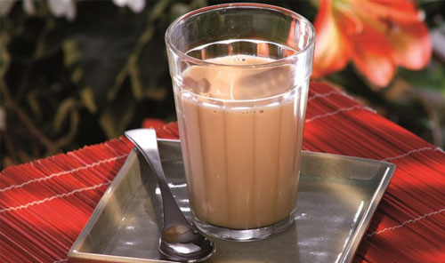

Pingado

Ingredients:
Steps:
- Heat the milk in the stove.
- Once the milk is close to boiling, turn the stove off and fill 3/4 of a cup with it.
- Add a drop of coffee, filling the last 1/4 of the cup.
Pingados are usually served in what Brazlians call an American glass, if you would like one of those,
make sure to buy one here when you visit Brazil.